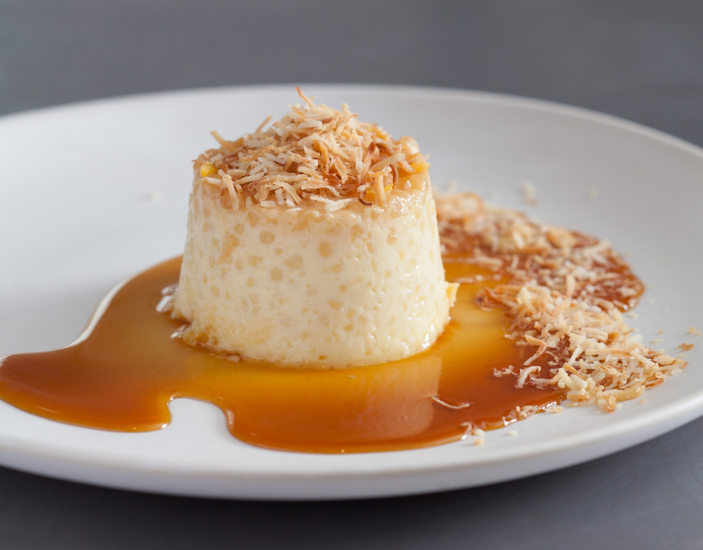

Pudim de Tapioca

Ingredientes
Instruções
1. Hidrate a tapioca no leite quente por 30 minutos.
2. Prepare a calda e forre a forma.
3. No liquidificador, bata o leite condensado, o leite de coco, os ovos e metade do coco ralado. Misture à tapioca hidratada.
4. Despeje na forma e asse em banho-maria, a 180ºC, por aproximadamente 1 hora e 30 minutos.
5. Deixe esfriar e leve à geladeira antes de desenformar.
Dicas:
Use tapioca granulada tradicional, não a instantânea. Decore com coco ralado ou coco queimado.
Deixe aqui a foto do seu pudim e sua avaliação e compartilhe essa receita:
❤️